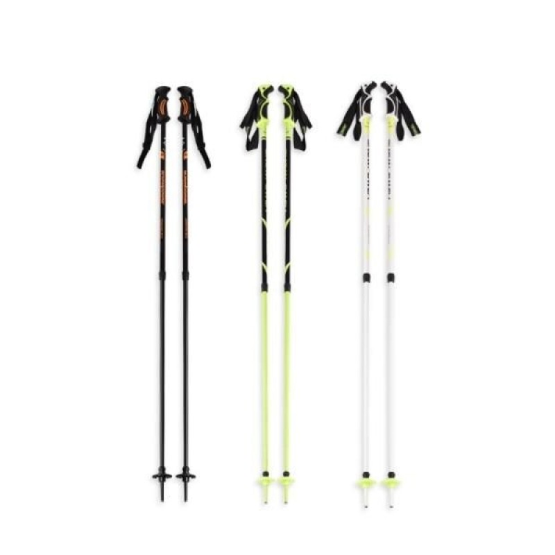
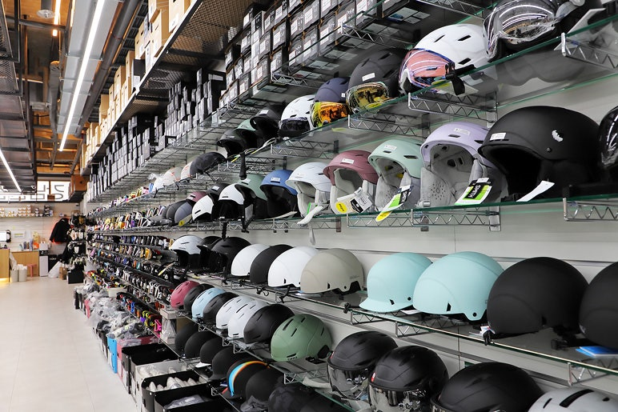

초보자를 위한 스키 장비 가이드
첫 스키, 무엇부터 준비해야 할까요? SNOW RUSH가 도와드립니다.
스키를 처음 시작하는 여러분을 위해
필수 장비 선택법을 쉽고 간단하게 알려드립니다.
한 항목을 클릭하여 자세한 정보를 확인해보세요.

스키 (Skis)
스키 길이, 종류 등 초보자를 위한 선택 가이드

스키 부츠 (Boots)
올바른 끈 조임과 착용감 요령 알아보기

폴 (Poles)
자신에게 맞는 정확한 길이 선택 방법

헬멧 (Helmet)
안전을 위한 필수 장비! 헬멧 선택 팁

고글 (Goggles)
눈부심과 자외선으로부터 눈을 보호 기능

의류 (Apparel)
레이어링, 아우터 등 3레이어링 시스템
Pro-Tip
구매와 대여, 어떤 것이 더 나을까요? 스키를 1년에 1~2번만 즐긴다면 대여함이 경제적입니다. 하지만 3번 이상 방문할 계획이라면, 내 몸에 꼭 맞는 장비를 구매하는 것이 실력 향상과 안전에 큰 도움이 됩니다.
소중한 내 장비, 전문가처럼 관리해볼까요?
SNOW RUSH에서 제공하는 장비 관리 팁으로 소중한 내 장비를 오래오래 사용해보세요.
장비 관리 팁 보러 가기